Confira a lista das séries que eu mais gosto de maratonar:
- Supernatural
- Smallville
- Gossip Girl
- Brooklyn Nine-Nine
- Stranger Things
- Round 6
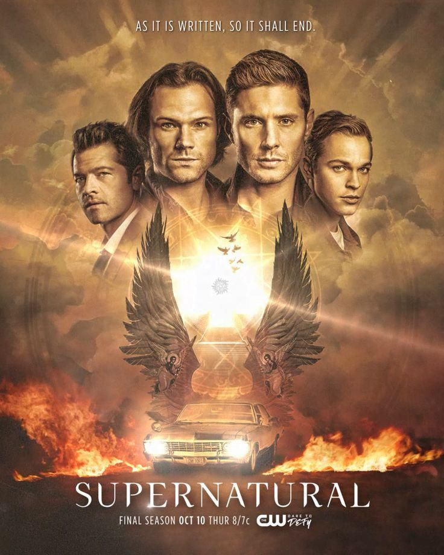
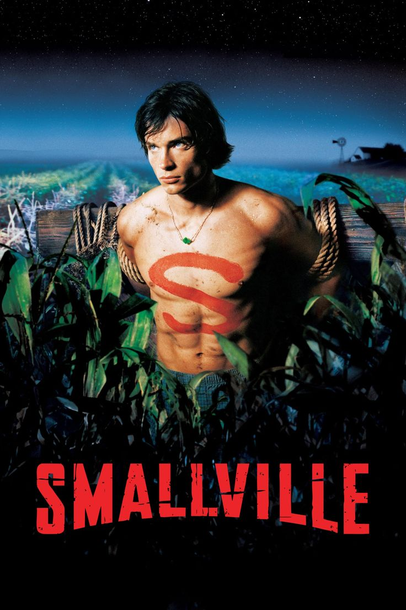
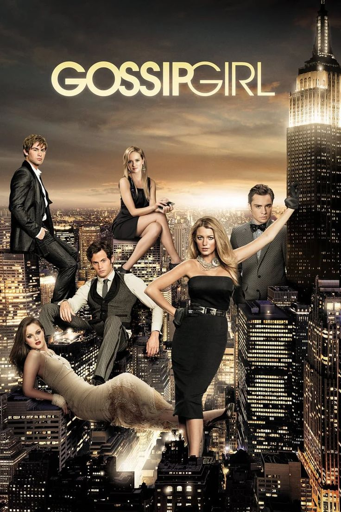
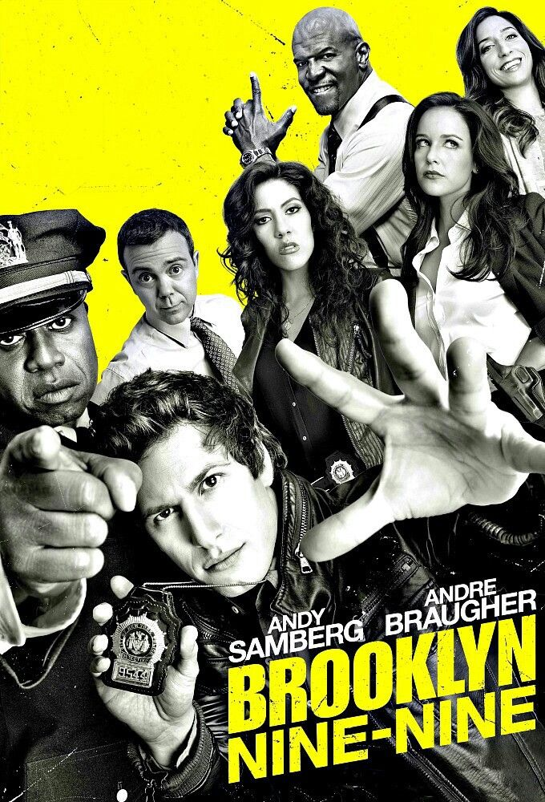
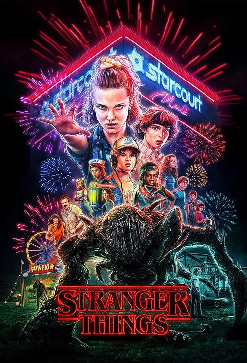
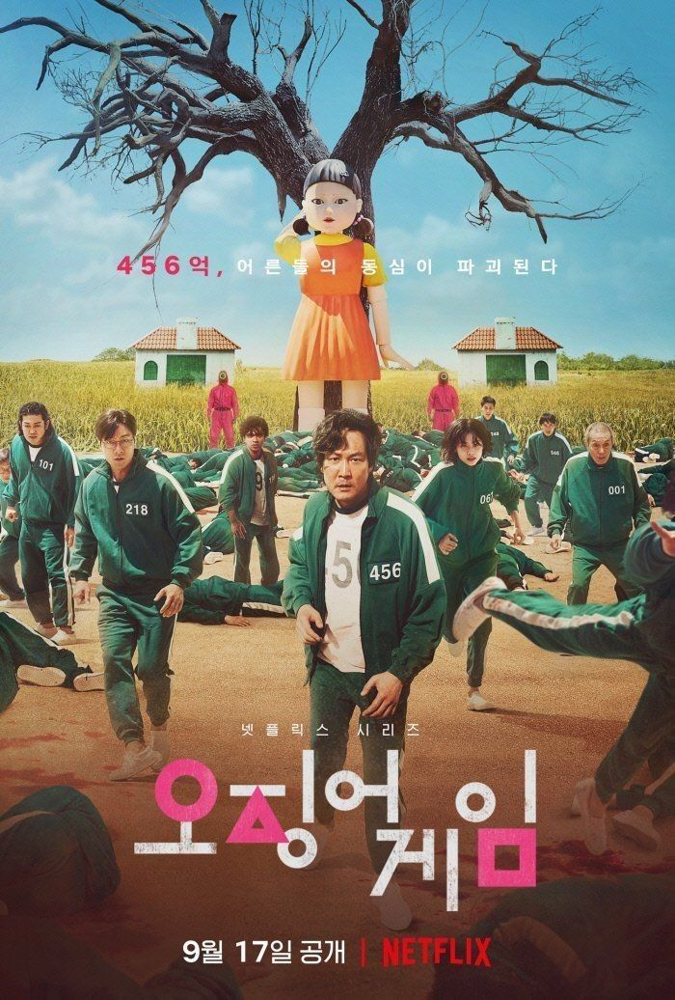
Aqui você encontrará uma seleção das minhas séries e dos meus filmes favoritos de todos os tempos!
Confira a lista das séries que eu mais gosto de maratonar:






Uma seleção com os meus filmes inesquecíveis, entre romances, ação e mistério:
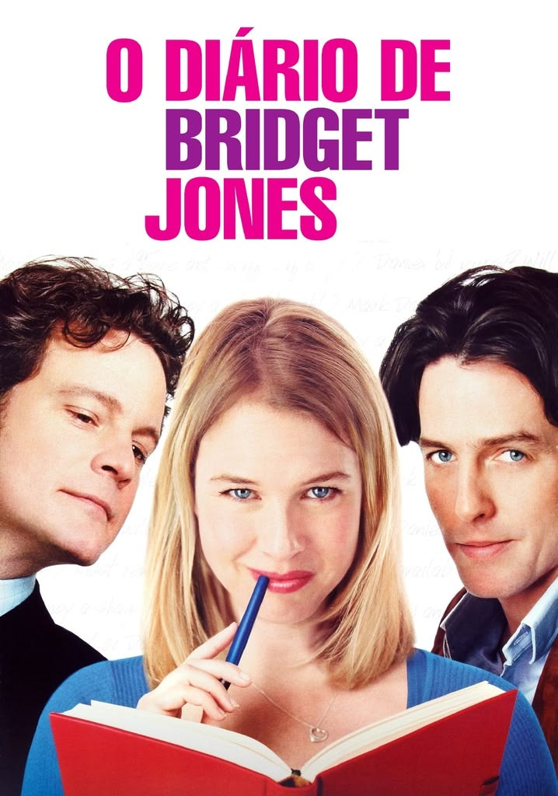
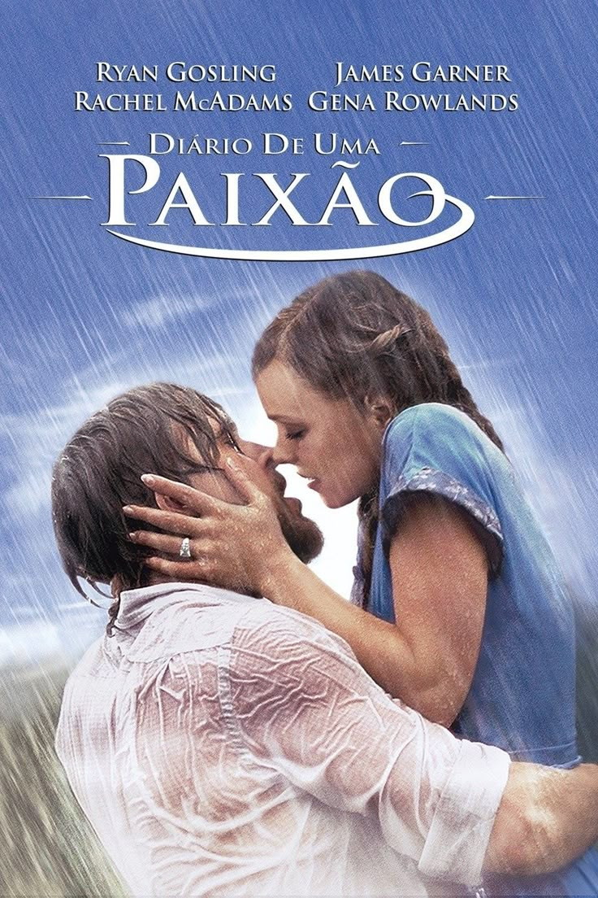
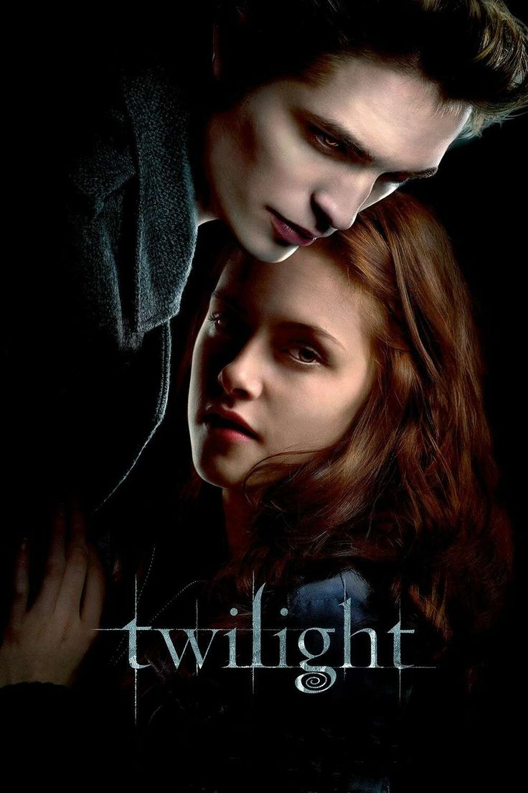
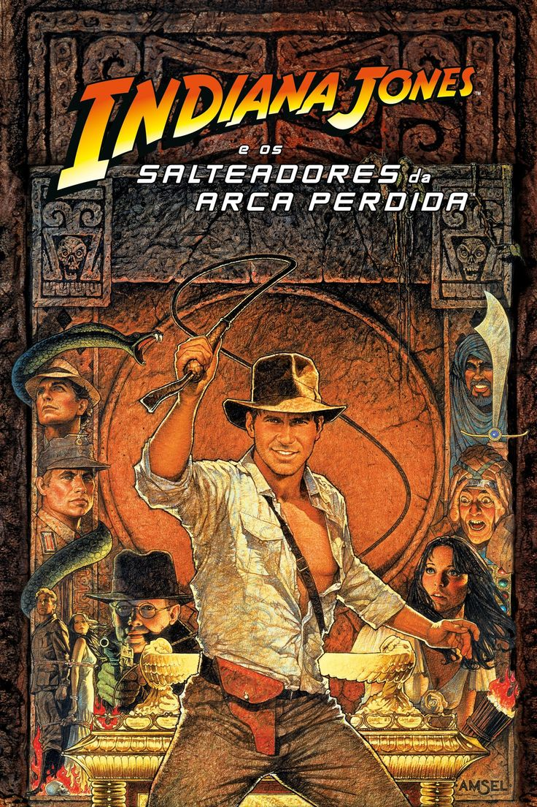
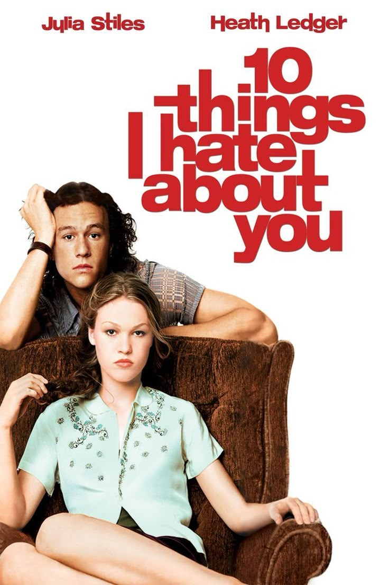
Obrigado por visitar meu site,
Espero que tenha gostado das minhas sugestões!
Em breve atualizações! ❤️